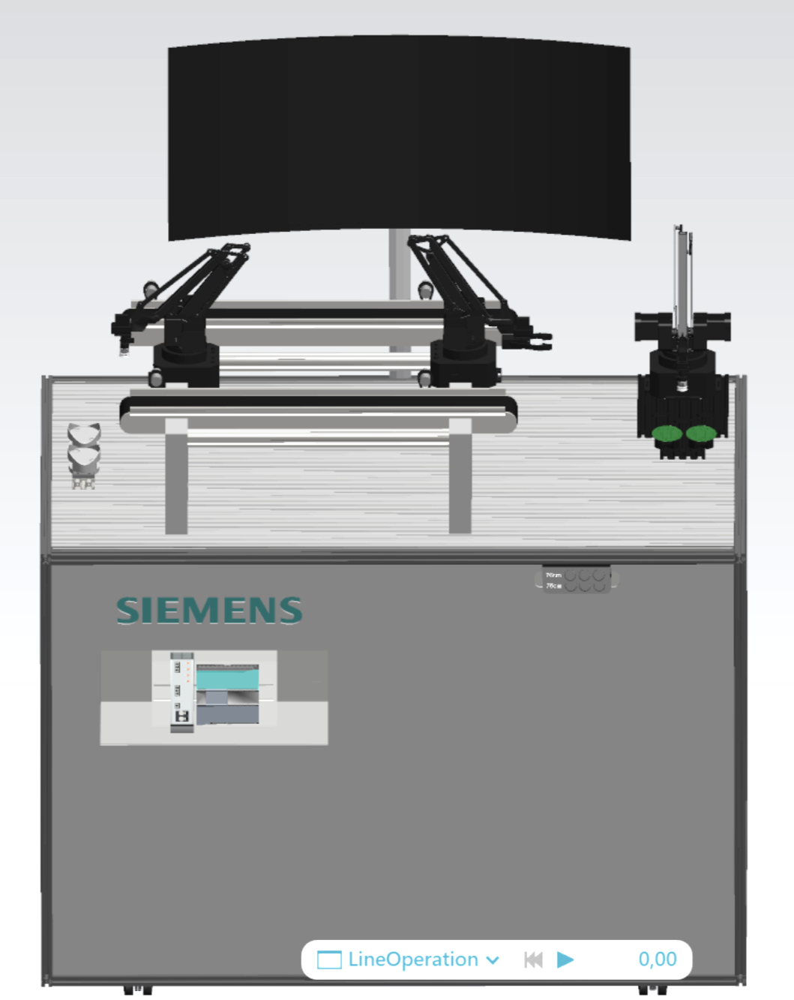
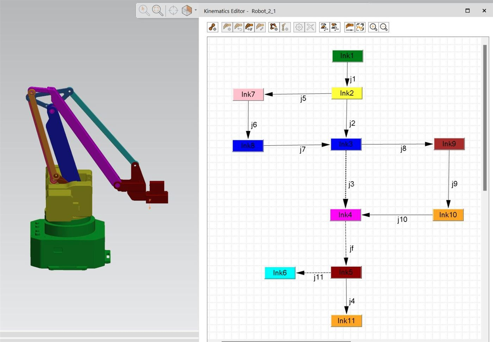
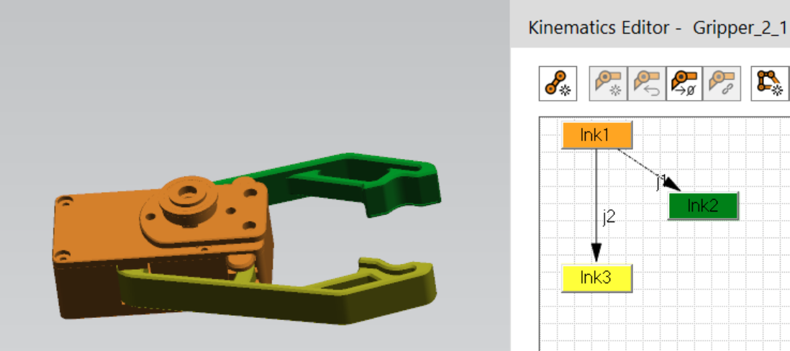
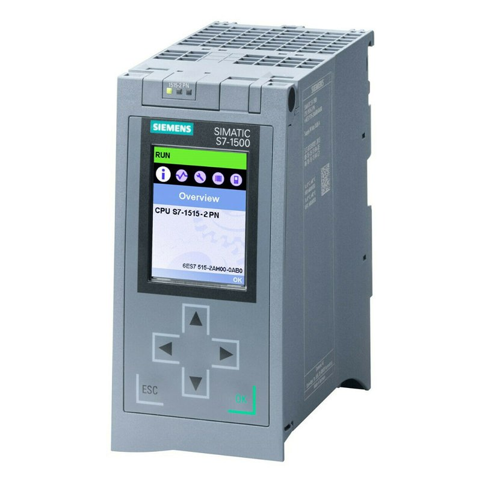
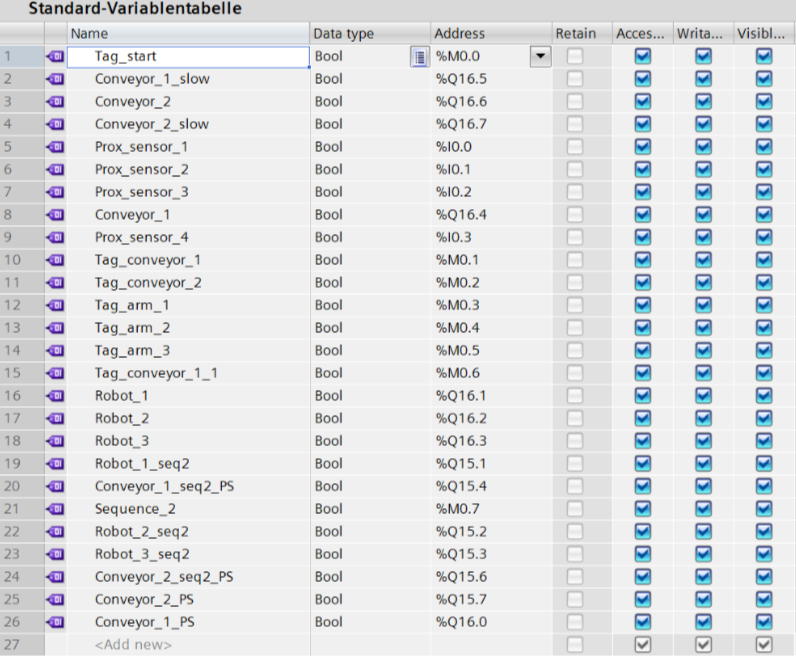

Summer 2025 · Siemens Internship
Assembly-Robot Cell Digital Twin

Digital Twin
Mirroring reality in a virtual simulation
The first thing I worked on was building a 1:1 virtual replica of the physical robotic assembly cell using Siemens Process Simulate. The system consists of three robot manipulators, two conveyor belts, a TV, a work station, a Siemens PLC, two green chips, two chip holders, and four proximity sensors.
Kinematics
Defining the robot's movement
We used the uArm Swift Pro robot manipulator which didn't have pre-built kinematics in the Process Simulate software. Therefore, I had to define its full kinematic chain from scratch. This meant defining every joint and link of the arm, frames, axes of rotation, link dependencies, and limits of rotation so that the virtual robot moves exactly like its real-world counterpart. I did this for all three robot arms, and also defined the kinematics for two different grippers — a grip and a vacuum.

PLC
Programming the logic in TIA Portal
The brain of the assembly cell is a Siemens S7-1500 PLC programmed in TIA Portal. After mapping the PLC hardware input and output terminal addresses with the software's PLC tags, I redefined the PLC ladder logic that controls the system's operation — when each robot starts, when the conveyors run, and how the sensors trigger each step of the sequence.

Connected Signals
One signal name, two worlds in sync
To connect the physical and virtual stations, every signal in Process Simulate was given the exact same name and address as its corresponding PLC tag in TIA Portal. This means that when a proximity sensor gets triggered on the real conveyor belt, the same event is triggered in the simulation — the virtual robots and conveyors respond in real time through an OPC UA connection, running the same operations as the physical cell in sync.


Demo